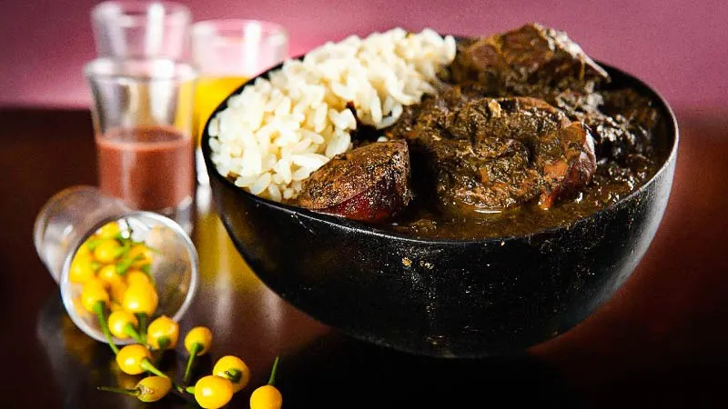

Maniçoba

A Maniçoba é um prato típico da culinária do Norte, especialmente do Pará. Feita com folhas de mandioca cozidas por dias, ela carrega tradição, sabor e muito afeto. É destaque no Círio de Nazaré e reúne famílias à mesa.
Ingredientes
- 1 kg de folhas de mandioca (maniçoba) bem lavadas e trituradas
- 300 g de carne de porco salgada (charque, pé, orelha, etc.)
- Linguiça calabresa e paio a gosto
- 300 g de bacon
- Alho, cebola e cheiro-verde a gosto
- Pimenta-do-reino e sal (com moderação)
Modo de Preparo
- Lave e ferva as folhas de maniçoba por pelo menos 3 a 5 dias, trocando a água várias vezes para eliminar a toxicidade.
- Em uma panela grande, frite o bacon, calabresa e as outras carnes.
- Adicione alho e cebola, refogue bem.
- Acrescente as folhas cozidas e mexa tudo junto.
- Cozinhe por mais algumas horas até ficar com a consistência bem pastosa.
- Finalize com cheiro-verde. Sirva com arroz branco.